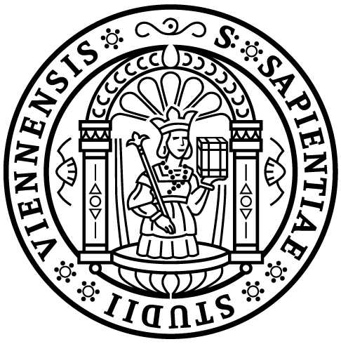
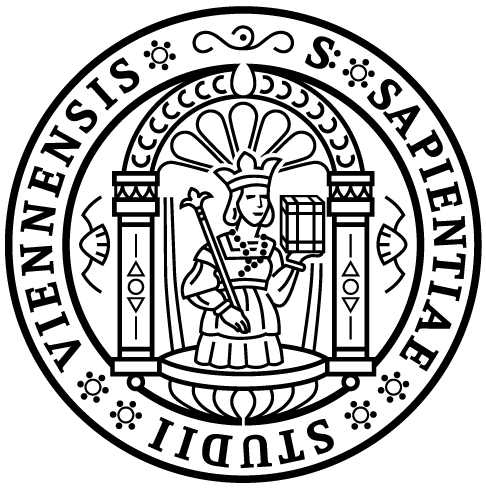

About OpenITI

The written heritage of the “Islamicate” cultures that stretch from modern Bengal to Spain is as vast as it is understudied and underrepresented in the digital humanities. The sheer volume and diversity of the surviving works produced in Persian and Arabic by denizens of these lands in the premodern period makes this body of texts ideal for computational forms of analysis. Efforts to utilize these new digital forms of analysis, however, have been stymied by poor OCR technology for Arabic-script languages and the lack of a open-access, standards-compliant Islamicate corpus.
The Open Islamicate Texts Initiative (OpenITI) is a multi-institutional effort to construct the first machine-actionable scholarly corpus of premodern Islamicate texts. Led by researchers at the Aga Khan University (AKU), Universität Wien (UW), and the Roshan Institute for Persian Studies at the University of Maryland (College Park) and an interdisciplinary advisory board of leading digital humanists and Islamic, Persian, and Arabic studies scholars, OpenITI aims to develop the digital infrastructure necessary to achieve this goal, including improved Arabic-script OCR, Arabic-script standards for OCR output and text encoding, and platforms for collaborative corpus creation (e.g., CorpusBuilder). In the process, OpenITI will enable new synergies between Digital Humanities and the inter-related Islamicate fields of Islamic, Persian, and Arabic Studies.

 
